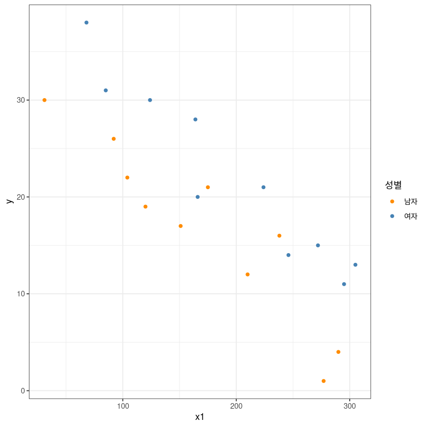

library(ggplot2)고급회귀분석 과제, CH13
네 번째 과제입니다.
제출 기한 12월 8일
행렬 계산은 R로 해도 됩니다.
그리고, 계산 후에 R 함수(예:lm)를 이용하여 결과 확인하고, 본인의 풀이가 맞는지 결과 확인해보세요.
제출 방법
직접 제출(607호) 도 가능하지만,
문서 작성 후 pdf로 변환(★★★)하여 lms에 제출을 추천
(pdf 아닌 문서는 미제출로 간주)
- ★★★ 파일이름 : 이름(학번)_HW04.pdf
주의사항
pdf로 꼭 변환하여 제출
풀이가 꼭 있어야 함 (답만 적혀 있는 경우 ’0’점 처리)
부정행위 시 ’F’학점
계산은 R로 해도 되지만 계산 풀이 과정이 꼭 있어야 함(수업 시간에 배운 식으로 풀이를 적어야 함.)!!
lm등의 함수를 이용한 풀이는 정답 확인용으로만 사용.
1.
| 일련번호 | \(y\)(총 소요시간) | \(x_1\)(적성검사점수) | \(x_2\)(성별) | 학력 |
|---|---|---|---|---|
| 1 | 17 | 151 | 남자 | 대 |
| 2 | 26 | 92 | 남자 | 고 |
| 3 | 21 | 175 | 남자 | 대 |
| 4 | 30 | 31 | 남자 | 고 |
| 5 | 22 | 104 | 남자 | 고 |
| 6 | 1 | 277 | 남자 | 대학원 |
| 7 | 12 | 210 | 남자 | 대학원 |
| 8 | 19 | 120 | 남자 | 대 |
| 9 | 4 | 290 | 남자 | 대학원 |
| 10 | 16 | 238 | 남자 | 대학원 |
| 11 | 28 | 164 | 여자 | 대학원 |
| 12 | 15 | 272 | 여자 | 대학원 |
| 13 | 11 | 295 | 여자 | 대학원 |
| 14 | 38 | 68 | 여자 | 고 |
| 15 | 31 | 85 | 여자 | 대 |
| 16 | 21 | 224 | 여자 | 대학원 |
| 17 | 20 | 166 | 여자 | 대 |
| 18 | 13 | 305 | 여자 | 대학원 |
| 19 | 30 | 124 | 여자 | 대 |
| 20 | 14 | 246 | 여자 | 대학원 |
df <- data.frame('y'=c(17,26,21,30,22,1,12,19,4,16,28,15,11,38,31,21,20,13,30,14),
'x1'=c(151,92,175,31,104,277,210,120,290,238,164,272,295,68,85,224,166,305,124,246),
'x2'=c('남자','남자','남자','남자','남자','남자','남자','남자','남자','남자','여자','여자','여자','여자','여자','여자','여자','여자','여자','여자'),
'edu'=c('대','고','대','고','고','대학원','대학원','대','대학원','대학원','대학원','대학원','대학원','고','대','대학원','대','대학원','대','대학원'))(1)
\(x_1\)을 \(x\)로 놓고 각 성별에 대하여 회귀모형을 적합하시오. 그런 후 두 회귀직선의 기울기가 같은지에 대한 가설검정을 하시오(5장 p12 : 두 회귀모형의 검정 참고).
answer
ggplot(df, aes(x1, y, col=x2)) +
geom_point() +
theme_bw() +
guides(col=guide_legend(title="성별")) +
scale_color_manual(labels = c("남자", "여자"),
values = c("darkorange", "steelblue"))
남성, Model 1: \(y_i = \beta_{01} + \beta_{11} x_{i1} + \epsilon_i , \epsilon_i \sim i.i.d. N(0, \sigma^2)\)
여성, Model 2: \(y_i = \beta_{02} + \beta_{12} x_{i2} + \epsilon_i , \epsilon_i \sim i.i.d. N(0, \sigma^2)\)
남자
plot(df$x1[df$x2=="남자"], df$y[df$x2=="남자"])\(S_{yy}\)
sum((df$y[df$x2=="남자"] - (17+26+21+30+22+1+12+19+4+16)/10)**2)
745.6
\(S_{xx}\)
sum((df$x1[df$x2=="남자"] - (151+92+175+31+104+277+210+120+290+238)/10)**2)
64705.6
\(S_{xy}\)
sum((df$y[df$x2=="남자"] - (17+26+21+30+22+1+12+19+4+16)/10) *
(df$x1[df$x2=="남자"] - (151+92+175+31+104+277+210+120+290+238)/10))
-6461.4
\(\hat{\beta}_1 = \frac{S_{xy}}{S_{xx}}\)
beta_men <- round(sum((df$y[df$x2=="남자"] - (17+26+21+30+22+1+12+19+4+16)/10) *
(df$x1[df$x2=="남자"] - (151+92+175+31+104+277+210+120+290+238)/10)) /
sum((df$x1[df$x2=="남자"] - (151+92+175+31+104+277+210+120+290+238)/10)**2),5)
beta_men
-0.09986
\(\hat{\beta_0}\)
round((17+26+21+30+22+1+12+19+4+16)/10 -
round(sum((df$y[df$x2=="남자"] - (17+26+21+30+22+1+12+19+4+16)/10) *
(df$x1[df$x2=="남자"] - (151+92+175+31+104+277+210+120+290+238)/10)) /
sum((df$x1[df$x2=="남자"] - (151+92+175+31+104+277+210+120+290+238)/10)**2),5)*
(151+92+175+31+104+277+210+120+290+238)/10,5)
33.65637
\(\hat{y}_{men} = 33.65637 -0.09986 x_{men}\)
R code
summary(lm(df$y[df$x2=="남자"]~df$x1[df$x2=="남자"]))
Call:
lm(formula = df$y[df$x2 == "남자"] ~ df$x1[df$x2 == "남자"])
Residuals:
Min 1Q Median 3Q Max
-4.9953 -1.5008 -0.6915 1.0080 6.1102
Coefficients:
Estimate Std. Error t value Pr(>|t|)
(Intercept) 33.65610 2.60379 12.926 1.21e-06 ***
df$x1[df$x2 == "남자"] -0.09986 0.01393 -7.171 9.51e-05 ***
---
Signif. codes: 0 ‘***’ 0.001 ‘**’ 0.01 ‘*’ 0.05 ‘.’ 0.1 ‘ ’ 1
Residual standard error: 3.542 on 8 degrees of freedom
Multiple R-squared: 0.8654, Adjusted R-squared: 0.8485
F-statistic: 51.43 on 1 and 8 DF, p-value: 9.51e-05answer
\(SSE_{men}\)
SSE_men <- sum((df$y[df$x2=="남자"] - (33.65637 - 0.09986*df$x1[df$x2=="남자"]))**2)
SSE_men
100.3747034298
\(MSE_{men} \sim \sigma^2_{men}\)
MSE_men <- sum((df$y[df$x2=="남자"] - (33.65637 - 0.09986*df$x1[df$x2=="남자"]))**2)/(10-2)
MSE_men
12.546837928725
R code
anova(lm(df$y[df$x2=="남자"]~df$x1[df$x2=="남자"]))| Df | Sum Sq | Mean Sq | F value | Pr(>F) | |
|---|---|---|---|---|---|
| <int> | <dbl> | <dbl> | <dbl> | <dbl> | |
| df$x1[df$x2 == "남자"] | 1 | 645.2253 | 645.22530 | 51.42533 | 9.509826e-05 |
| Residuals | 8 | 100.3747 | 12.54684 | NA | NA |
answer
여자
plot(df$x1[df$x2=="여자"], df$y[df$x2=="여자"])\(S_{yy}\)
sum((df$y[df$x2=="여자"] - (28+15+11+38+31+21+20+13+30+14)/10)**2)
756.9
\(S_{xx}\)
sum((df$x1[df$x2=="여자"] - (164+272+295+68+85+224+166+305+124+246)/10)**2)
66542.9
\(S_{xy}\)
sum((df$y[df$x2=="여자"] - (28+15+11+38+31+21+20+13+30+14)/10) *
(df$x1[df$x2=="여자"] - (164+272+295+68+85+224+166+305+124+246)/10))
-6783.9
\(\hat{\beta}_1 = \frac{S_{xy}}{S_{xx}}\)
beta_women <- round(sum((df$y[df$x2=="여자"] - (28+15+11+38+31+21+20+13+30+14)/10) *
(df$x1[df$x2=="여자"] - (164+272+295+68+85+224+166+305+124+246)/10))/
sum((df$x1[df$x2=="여자"] - (164+272+295+68+85+224+166+305+124+246)/10)**2),5)
beta_women
-0.10195
\(\hat{\beta_0}\)
round((28+15+11+38+31+21+20+13+30+14)/10 -
round(sum((df$y[df$x2=="여자"] - (28+15+11+38+31+21+20+13+30+14)/10) *
(df$x1[df$x2=="여자"] - (164+272+295+68+85+224+166+305+124+246)/10))/
sum((df$x1[df$x2=="여자"] - (164+272+295+68+85+224+166+305+124+246)/10)**2),5)*
(164+272+295+68+85+224+166+305+124+246)/10,5)
41.97006
\(\hat{y}_{women} = 41.97006 -0.10195 x_{women}\)
R code
summary(lm(df$y[df$x2=="여자"]~df$x1[df$x2=="여자"]))
Call:
lm(formula = df$y[df$x2 == "여자"] ~ df$x1[df$x2 == "여자"])
Residuals:
Min 1Q Median 3Q Max
-5.046 -1.952 0.716 2.060 2.963
Coefficients:
Estimate Std. Error t value Pr(>|t|)
(Intercept) 41.96962 2.33998 17.936 9.57e-08 ***
df$x1[df$x2 == "여자"] -0.10195 0.01108 -9.205 1.57e-05 ***
---
Signif. codes: 0 ‘***’ 0.001 ‘**’ 0.01 ‘*’ 0.05 ‘.’ 0.1 ‘ ’ 1
Residual standard error: 2.857 on 8 degrees of freedom
Multiple R-squared: 0.9137, Adjusted R-squared: 0.9029
F-statistic: 84.73 on 1 and 8 DF, p-value: 1.57e-05answer
\(SSE_{women}\)
SSE_women <- sum((df$y[df$x2=="여자"] - (41.97006 - 0.10195*df$x1[df$x2=="여자"]))**2)
SSE_women
65.2965503775
\(MSE_{women} \sim \sigma^2_{women}\)
MSE_women <- sum((df$y[df$x2=="여자"] - (41.97006 - 0.10195*df$x1[df$x2=="여자"]))**2)/(10-2)
MSE_women
8.1620687971875
R code
anova(lm(df$y[df$x2=="여자"]~df$x1[df$x2=="여자"]))| Df | Sum Sq | Mean Sq | F value | Pr(>F) | |
|---|---|---|---|---|---|
| <int> | <dbl> | <dbl> | <dbl> | <dbl> | |
| df$x1[df$x2 == "여자"] | 1 | 691.60345 | 691.603450 | 84.73384 | 1.56975e-05 |
| Residuals | 8 | 65.29655 | 8.162069 | NA | NA |
answer
가설
\(H_0: \beta_{11} - \beta_{12} = 0\)
\(H_0: \beta_{11} - \beta_{12} \neq 0\)
검정통계량 \(t_0 = \frac{\hat{\beta}_{11}- \hat{\beta}_{12}}{\sqrt{\hat{var}(\hat{\beta}_{11} - \hat{\beta}_{12})}}\sim H_0, t(n_1 - n_2 - 4)\)
\(var(\hat{\beta}_{11} - \hat{\beta}_{12})\)
\(= var(\hat{\beta}_{11}) + var(\hat{\beta}_{12})\)
\(= \frac{\sigma^2}{\sum(x_{11} - \bar{x}_{11})^2} + \frac{\sigma^2}{\sum(x_{12} - \bar{x}_{12})^2}\)
\(\hat{\beta}_{11} - \hat{\beta}_{12}\)
beta_men # CH13, p14 beta_1과 동일
beta_women # CH13 p1.4 beta1 + beta3 과 동일
# beta11 - beta12 = \beta3 = 0.0021
-0.09986
-0.10195
beta_men - beta_women
0.00208999999999999
\(\sigma^2 = MSE(FM) = \frac{SSE_{FM}}{n_1 + n_2 - 1}\)
\(\star SSE_{FM} = SSE_1 + SSE_2\)
SSE_men
SSE_women
SSE_men + SSE_women # SSE_FM
(SSE_men + SSE_women)/(10 +10-2)
100.3747034298
65.2965503775
165.6712538073
9.20395854485
\(\sqrt{var(\hat{\beta}_{11} - \hat{\beta}_{12}))}\)
sqrt(MSE_men/sum((df$x1[df$x2=="남자"] - (151+92+175+31+104+277+210+120+290+238)/10)**2) +
MSE_women/sum((df$x1[df$x2=="여자"] - (164+272+295+68+85+224+166+305+124+246)/10)**2))
# CG13 p,16 hat{=(s.e.)(beta_3)과 동일
0.0177922812236426
\(t_0\)
(beta_men - beta_women)/
sqrt(MSE_men/sum((df$x1[df$x2=="남자"] - (151+92+175+31+104+277+210+120+290+238)/10)**2) +
MSE_women/sum((df$x1[df$x2=="여자"] - (164+272+295+68+85+224+166+305+124+246)/10)**2))
0.117466668479969
\(var(\hat{\beta}_{men} - \hat{\beta}_{women})\)
MSE_men/sum((df$x1[df$x2=="남자"] - (151+92+175+31+104+277+210+120+290+238)/10)**2) +
MSE_women/sum((df$x1[df$x2=="여자"] - (164+272+295+68+85+224+166+305+124+246)/10)**2)
0.000316565271141184
qt(0.025,16)
-2.11990529922126
기각역 : \(|t_0| > t_{\alpha/2}(n_1 + n_2 - 4) = 2.120\)
결론: 기각역에 속하지 않으므로 귀무가설 기각 못함.
\(H_0: \beta_{11} - \beta_{12} = 0\) 채택
따라서 성별간 두 기울기가 다르다고 할 수 없다.
R code
ggplot(df, aes(x1, y, col=x2)) +
geom_point() +
theme_bw() +
geom_abline(slope = coef(lm(df$y~df$x1*df$x2))[2], intercept = coef(lm(df$y~df$x1*df$x2))[1], col= 'darkorange')+
geom_abline(slope = coef(lm(df$y~df$x1*df$x2))[2], intercept = coef(lm(df$y~df$x1*df$x2))[1]+coef(lm(df$y~df$x1*df$x2))[3], col= 'steelblue')+
guides(col=guide_legend(title="성별")) +
scale_color_manual(labels = c("남자", "여자"), values = c("darkorange", "steelblue"))
summary(lm(df$y~df$x1*df$x2))
Call:
lm(formula = df$y ~ df$x1 * df$x2)
Residuals:
Min 1Q Median 3Q Max
-5.0463 -1.7591 -0.6232 1.9311 6.1102
Coefficients:
Estimate Std. Error t value Pr(>|t|)
(Intercept) 33.656104 2.365392 14.229 1.68e-10 ***
df$x1 -0.099858 0.012650 -7.894 6.59e-07 ***
df$x2여자 8.313516 3.541379 2.348 0.0321 *
df$x1:df$x2여자 -0.002089 0.017766 -0.118 0.9078
---
Signif. codes: 0 ‘***’ 0.001 ‘**’ 0.01 ‘*’ 0.05 ‘.’ 0.1 ‘ ’ 1
Residual standard error: 3.218 on 16 degrees of freedom
Multiple R-squared: 0.8992, Adjusted R-squared: 0.8803
F-statistic: 47.56 on 3 and 16 DF, p-value: 3.405e-08\(\beta_3 = -0.002089\), 유의확률 $0.9078 $ 유의수준 \(\alpha=0.05\)에서 기각할 수 없다.
기각역: \(|t_0|?t_{\alpha/2}(n_1 + n_2 - 4) = t_{0.025}(16) = 2.120\)
기각역에 속하지 않으므로 \(H_0\) 기각 못함 \(H_0: \beta_{11} - \beta_{12} = 0\) 채택
따라서 성별간 두 기울기가 다르다고 할 수 없다.
(2)
13장 강의노트 p.8 에 따르면 \(x_1,x_2\)을 설명변수로 했을 때 적합 결과는 \[\hat{y} = \hat{\beta}_0 + \hat{\beta}_1 x_1 + \hat{\beta}_2 x_2\] \[= 33.8349 − 0.1009x_1 + 7.9340x_2\] 이었다. \(\beta_1\) 의 추정값 \(\hat{\beta}_1\) 이 갖는 분산을 추정하고, \(\beta_1\) 의 95% 신뢰구간을 구하시오.
answer
betahat_2 <- solve(t(matrix(c(rep(1,20),df$x1,rep(0,10),rep(1,10)),nrow=20,ncol=3))%*%
matrix(c(rep(1,20),df$x1,rep(0,10),rep(1,10)),nrow=20,ncol=3))%*%
t(matrix(c(rep(1,20),df$x1,rep(0,10),rep(1,10)),nrow=20,ncol=3))%*%
matrix(df$y,nrow=20,ncol=1)
betahat_2| 33.8349119 |
| -0.1009177 |
| 7.9339526 |
df$sex <- ifelse(df$x2=='여자',1,0)\(var(\beta_1) = (x^\top x)^{-1}_{(2,2)} \sigma^2\)
t(matrix(c(rep(1,20),df$x1,df$sex),nrow=20,ncol=3))%*%matrix(c(rep(1,20),df$x1,df$sex),nrow=20,ncol=3)| 20 | 3637 | 10 |
| 3637 | 796043 | 1949 |
| 10 | 1949 | 10 |
solve(t(matrix(c(rep(1,20),df$x1,df$sex),nrow=20,ncol=3))%*%matrix(c(rep(1,20),df$x1,df$sex),nrow=20,ncol=3))| 0.31709536 | -1.286110e-03 | -0.0664325307 |
| -0.00128611 | 7.619135e-06 | -0.0001988594 |
| -0.06643253 | -1.988594e-04 | 0.2051902307 |
\((x^\top x)^{-1}_{(2,2)}\)
solve(t(matrix(c(rep(1,20),df$x1,df$sex),nrow=20,ncol=3))%*%matrix(c(rep(1,20),df$x1,df$sex),nrow=20,ncol=3))[2,2]
7.61913469487271e-06
\(MSE \sim \sigma^2\)
sum((matrix(c(rep(1,20),df$x1,rep(0,10),rep(1,10)),nrow=20,ncol=3)%*%betahat_2 - df$y)**2)/17
9.75379176770424
\(var(\beta_1) = (x^\top x)^{-1}_{(2,2)} \sigma^2\)
hat_var_b1 <- ((solve(t(matrix(c(rep(1,20),df$x1,rep(0,10),rep(1,10)),nrow=20,ncol=3)) %*% matrix(c(rep(1,20),df$x1,rep(0,10),rep(1,10)),nrow=20,ncol=3)))[2,2])*
sum((matrix(c(rep(1,20),df$x1,rep(0,10),rep(1,10)),nrow=20,ncol=3)%*%betahat_2 - df$y)**2)/17
hat_var_b1
7.43154532638791e-05
sqrt(hat_var_b1)
0.00862064111675455
\(\beta_1 \pm t_{0.975}(17) se(\hat{\beta}_1)\)
betahat_2[2] - qt(0.975,17) * sqrt(hat_var_b1)
-0.119105687693037
betahat_2[2] + qt(0.975,17) * sqrt(hat_var_b1)
-0.0827297618549584
R code
summary(lm(df$y~matrix(c(rep(1,20),df$x1,df$sex),nrow=20,ncol=3)))$coefficients| Estimate | Std. Error | t value | Pr(>|t|) | |
|---|---|---|---|---|
| (Intercept) | 33.8349119 | 1.758659173 | 19.239039 | 5.635999e-13 |
| matrix(c(rep(1, 20), df$x1, df$sex), nrow = 20, ncol = 3)2 | -0.1009177 | 0.008620641 | -11.706522 | 1.468240e-09 |
| matrix(c(rep(1, 20), df$x1, df$sex), nrow = 20, ncol = 3)3 | 7.9339526 | 1.414702366 | 5.608213 | 3.134533e-05 |
anova(lm(df$y~matrix(c(rep(1,20),df$x1,df$sex),nrow=20,ncol=3)))| Df | Sum Sq | Mean Sq | F value | Pr(>F) | |
|---|---|---|---|---|---|
| <int> | <dbl> | <dbl> | <dbl> | <dbl> | |
| matrix(c(rep(1, 20), df$x1, df$sex), nrow = 20, ncol = 3) | 2 | 1477.1355 | 738.567770 | 75.72109 | 3.419664e-09 |
| Residuals | 17 | 165.8145 | 9.753792 | NA | NA |
confint(lm(df$y~matrix(c(rep(1,20),df$x1,rep(0,10),rep(1,10)),nrow=20,ncol=3)), level=0.95)| 2.5 % | 97.5 % | |
|---|---|---|
| (Intercept) | 30.1244654 | 37.54535846 |
| matrix(c(rep(1, 20), df$x1, rep(0, 10), rep(1, 10)), nrow = 20, ncol = 3)1 | NA | NA |
| matrix(c(rep(1, 20), df$x1, rep(0, 10), rep(1, 10)), nrow = 20, ncol = 3)2 | -0.1191057 | -0.08272976 |
| matrix(c(rep(1, 20), df$x1, rep(0, 10), rep(1, 10)), nrow = 20, ncol = 3)3 | 4.9491915 | 10.91871371 |
(3)
다음의 모형을 적합하시오. \[y_i =\beta_0 +\beta_1x_{1i} +\beta_2x_{2i} +\beta_3x_{3i} +\beta_4x_{4i} + \epsilon_i\]
\[x_{3i}=\begin{cases} 1: & \text{학력이 고졸} \\ 0 : &\text{기타} \end{cases}, x_{4i}= \begin{cases} 1 : & \text{학력이 대졸} \\ 0 : & \text{기타}\end{cases} \]
answer
df$high <- ifelse(df$edu=='고',1,0)df$univ <- ifelse(df$edu=='대',1,0)\(\hat{\beta}\)
x_hu <- matrix(c(rep(c(1),20),df$x1,df$sex,df$high,df$univ),nrow=20,ncol=5)betahat_hu <- solve(t(x_hu)%*%x_hu)%*%t(x_hu)%*%df$y
betahat_hu| 36.5226684 |
| -0.1101234 |
| 7.8990531 |
| -1.3758336 |
| -2.4036479 |
\(y = 36.5226684 - 0.1101234 x_1 + 7.8990531 x_2 - 1.3758336 x_3 - 2.4036479 x_4\)
R code
summary(lm(y~x1+sex+high+univ,df))
Call:
lm(formula = y ~ x1 + sex + high + univ, data = df)
Residuals:
Min 1Q Median 3Q Max
-5.0185 -1.7038 -0.5386 1.6375 6.1526
Coefficients:
Estimate Std. Error t value Pr(>|t|)
(Intercept) 36.52267 5.33138 6.851 5.50e-06 ***
x1 -0.11012 0.01997 -5.516 5.93e-05 ***
sex 7.89905 1.50447 5.250 9.79e-05 ***
high -1.37583 4.13333 -0.333 0.744
univ -2.40365 2.85796 -0.841 0.414
---
Signif. codes: 0 ‘***’ 0.001 ‘**’ 0.01 ‘*’ 0.05 ‘.’ 0.1 ‘ ’ 1
Residual standard error: 3.214 on 15 degrees of freedom
Multiple R-squared: 0.9057, Adjusted R-squared: 0.8806
F-statistic: 36.02 on 4 and 15 DF, p-value: 1.587e-07(4)
위의 모형에서 \(\beta_3\)과 \(\beta_4\)가 갖는 의미를 해석하시오.
\[y_i =\beta_0 +\beta_1x_{1i} +\beta_2x_{2i} +\beta_3x_{3i} +\beta_4x_{4i} + \epsilon_i\]
\[x_{3i}=\begin{cases} 1: & \text{학력이 고졸} \\ 0 : &\text{기타} \end{cases}, x_{4i}= \begin{cases} 1 : & \text{학력이 대졸} \\ 0 : & \text{기타}\end{cases} \]
answer
\(E(y) = \beta_0 +\beta_1x_{1} +\beta_2x_{2} +\beta_3x_{3} +\beta_4x_{4}\)
학력이 고등학교 졸업
\(E(y|고) = (\beta_0 +\beta_3) +\beta_1x_{1} +\beta_2x_{2}\)
학력이 대학교 졸업
\(E(y|고) = (\beta_0 +\beta_4)+\beta_1x_{1}+\beta_2x_{2}\)
학력이 대학원 졸업
\(E(y|대학원) = \beta_0 +\beta_1x_{1}+\beta_2x_{2}\)
\(\beta_3\) = 학력이 고등학교 졸업일때의 평균 숙련 시간에서 학력이 대학원 졸업일때의 평균 숙련시간을 뺀 값이다.
\(\beta_4\) = 학력이 대학교 졸업일때의 평균 숙련 시간에서 학력이 대학원 졸업일때의 평균 숙련시간을 뺀 값이다.
(5)
위의 \(\beta_3\)과 \(\beta_4\)의 최소제곱추정값 \(\hat{\beta}_3\)과 $_4$가 갖는 각각의 분산을 추정하시오. \(\beta_3\)과 \(\beta_4\)의 95% 신뢰구간을 구하시오
answer
\(var(\beta_3) = (x^\top x)^{-1}_{(4,4)} \sigma^2\)
t(x_hu)%*%x_hu| 20 | 3637 | 10 | 4 | 6 |
| 3637 | 796043 | 1949 | 295 | 821 |
| 10 | 1949 | 10 | 1 | 3 |
| 4 | 295 | 1 | 4 | 0 |
| 6 | 821 | 3 | 0 | 6 |
solve(t(x_hu)%*%x_hu)| 2.751920464 | -0.009968093 | -0.231607148 | -1.958871839 | -1.272149536 |
| -0.009968093 | 0.000038595 | 0.000397155 | 0.007022423 | 0.004488433 |
| -0.231607148 | 0.000397155 | 0.219140617 | 0.147531812 | 0.067692796 |
| -1.958871839 | 0.007022423 | 0.147531812 | 1.654085215 | 0.924204433 |
| -1.272149536 | 0.004488433 | 0.067692796 | 0.924204433 | 0.790802611 |
\((x^\top x)^{-1}_{(4,4)}\)
solve(t(x_hu)%*%x_hu)[4,4]
1.65408521513359
\(MSE \sim \sigma^2\)
sum((x_hu%*%betahat_hu - df$y)**2)
154.929453525913
sum((x_hu%*%betahat_hu - df$y)**2)/15
10.3286302350608
\(var(\hat{\beta}_3) = (x^\top x)^{-1}_{(4,4)} \sigma^2\)
hat_var_hu_b3 <- (solve(t(x_hu)%*%x_hu)[4,4]%*% sum((x_hu%*%betahat_hu - df$y)**2)/15)[,]
hat_var_hu_b3
17.0844345643959
sqrt(hat_var_hu_b3)
4.133332138166
\(t_{\alpha/2}(n-4-1)\)
qt(0.975,15)
2.13144954555978
\(\beta_3 \pm t_{0.975}(15) se(\hat{\beta}_3)\)
betahat_hu[4] - qt(0.975,15) * sqrt(hat_var_hu_b3)
-10.1858224609978
betahat_hu[4] + qt(0.975,15) * sqrt(hat_var_hu_b3)
7.43415535408522
\((x^\top x)^{-1}_{(5,5)}\)
solve(t(x_hu)%*%x_hu)[5,5]
0.790802610709727
\(MSE \sim \sigma^2\)
sum((x_hu%*%betahat_hu - df$y)**2)/15
10.3286302350608
\(var(\beta_4) = (x^\top x)^{-1}_{(5,5)} \sigma^2\)
hat_var_hu_b4 <- (solve(t(x_hu)%*%x_hu)[5,5]%*% sum((x_hu%*%betahat_hu - df$y)**2)/15)[,]
hat_var_hu_b4
8.16790775494154
sqrt(hat_var_hu_b4)
2.85795517021201
\(\beta_4 \pm t_{0.975}(15) se(\hat{\beta}_4)\)
betahat_hu[5] - qt(0.975,15) * sqrt(hat_var_hu_b4)
-8.49523514036072
betahat_hu[5] + qt(0.975,15) * sqrt(hat_var_hu_b4)
3.68793935719647
R code
summary(lm(df$y~x_hu))$coefficients| Estimate | Std. Error | t value | Pr(>|t|) | |
|---|---|---|---|---|
| (Intercept) | 36.5226684 | 5.33137589 | 6.8505146 | 5.501546e-06 |
| x_hu2 | -0.1101234 | 0.01996581 | -5.5155977 | 5.929593e-05 |
| x_hu3 | 7.8990531 | 1.50446748 | 5.2503980 | 9.786601e-05 |
| x_hu4 | -1.3758336 | 4.13333214 | -0.3328631 | 7.438444e-01 |
| x_hu5 | -2.4036479 | 2.85795517 | -0.8410376 | 4.135338e-01 |
anova(lm(df$y~x_hu))| Df | Sum Sq | Mean Sq | F value | Pr(>F) | |
|---|---|---|---|---|---|
| <int> | <dbl> | <dbl> | <dbl> | <dbl> | |
| x_hu | 4 | 1488.0205 | 372.00514 | 36.01689 | 1.586767e-07 |
| Residuals | 15 | 154.9295 | 10.32863 | NA | NA |
confint(lm(df$y~x_hu), level=0.95)| 2.5 % | 97.5 % | |
|---|---|---|
| (Intercept) | 25.1591097 | 47.88622717 |
| x_hu1 | NA | NA |
| x_hu2 | -0.1526795 | -0.06756725 |
| x_hu3 | 4.6923566 | 11.10574964 |
| x_hu4 | -10.1858225 | 7.43415535 |
| x_hu5 | -8.4952351 | 3.68793936 |
(6)
만약 적성검사점수와 성별, 적성검사점수와 학력, 성별과 학력간에 교호작용이 있다면, 다음의 반응함수를 가정할 수 있다. \[E(y)=\beta_0 +\beta_1x_1 +\beta_2x_2 +\beta_3x_3 +\beta_4x_4\] \[+ \beta_5x_1x_2 + \beta_6x_1x_3 + \beta_7x_1x_4 + \beta_8x_2x_3 + \beta_9x_2x_4\] 데이터로부터 위의 반응함수를 적합하고, 다섯 개의 다음 가설을 유의수준 \(\alpha = 0.1\)에서 검정하시오. \(H_0 :\beta_i =0, H_1 :\beta_i \neq 0(i=5,6,7,8,9)\)
answer
x_6 <- matrix(c(rep(c(1),20),df$x1,df$sex,df$high,df$univ,
df$x1*df$sex, df$x1*df$high, df$x1*df$univ, df$sex*df$high, df$sex*df$univ),nrow=20,ncol=10)x_6| 1 | 151 | 0 | 0 | 1 | 0 | 0 | 151 | 0 | 0 |
| 1 | 92 | 0 | 1 | 0 | 0 | 92 | 0 | 0 | 0 |
| 1 | 175 | 0 | 0 | 1 | 0 | 0 | 175 | 0 | 0 |
| 1 | 31 | 0 | 1 | 0 | 0 | 31 | 0 | 0 | 0 |
| 1 | 104 | 0 | 1 | 0 | 0 | 104 | 0 | 0 | 0 |
| 1 | 277 | 0 | 0 | 0 | 0 | 0 | 0 | 0 | 0 |
| 1 | 210 | 0 | 0 | 0 | 0 | 0 | 0 | 0 | 0 |
| 1 | 120 | 0 | 0 | 1 | 0 | 0 | 120 | 0 | 0 |
| 1 | 290 | 0 | 0 | 0 | 0 | 0 | 0 | 0 | 0 |
| 1 | 238 | 0 | 0 | 0 | 0 | 0 | 0 | 0 | 0 |
| 1 | 164 | 1 | 0 | 0 | 164 | 0 | 0 | 0 | 0 |
| 1 | 272 | 1 | 0 | 0 | 272 | 0 | 0 | 0 | 0 |
| 1 | 295 | 1 | 0 | 0 | 295 | 0 | 0 | 0 | 0 |
| 1 | 68 | 1 | 1 | 0 | 68 | 68 | 0 | 1 | 0 |
| 1 | 85 | 1 | 0 | 1 | 85 | 0 | 85 | 0 | 1 |
| 1 | 224 | 1 | 0 | 0 | 224 | 0 | 0 | 0 | 0 |
| 1 | 166 | 1 | 0 | 1 | 166 | 0 | 166 | 0 | 1 |
| 1 | 305 | 1 | 0 | 0 | 305 | 0 | 0 | 0 | 0 |
| 1 | 124 | 1 | 0 | 1 | 124 | 0 | 124 | 0 | 1 |
| 1 | 246 | 1 | 0 | 0 | 246 | 0 | 0 | 0 | 0 |
betahat_6 <- solve(t(x_6)%*%x_6)%*%t(x_6)%*%df$y
betahat_6| 36.63696518 |
| -0.11186981 |
| 12.27994350 |
| -3.42748073 |
| -6.74634061 |
| -0.01528919 |
| 0.01659028 |
| 0.03861449 |
| 0.02924469 |
| -4.10250464 |
\(\hat{E}(y) = 36.63696518 - 0.11186981x_1 + 12.27994350x_2 - 3.42748073x_3 - 6.74634061x_4 - 0.01528919x_1 x_2 + 0.01659028x_1 x_3 + 0.03861449 x_1 x_4 + 0.02924469x_2 x_3 - 4.10250464x_2 x_4\)
t(x_6)%*%x_6| 20 | 3637 | 10 | 4 | 6 | 1949 | 295 | 821 | 1 | 3 |
| 3637 | 796043 | 1949 | 295 | 821 | 446403 | 24865 | 117983 | 68 | 375 |
| 10 | 1949 | 10 | 1 | 3 | 1949 | 68 | 375 | 1 | 3 |
| 4 | 295 | 1 | 4 | 0 | 68 | 295 | 0 | 1 | 0 |
| 6 | 821 | 3 | 0 | 6 | 375 | 0 | 821 | 0 | 3 |
| 1949 | 446403 | 1949 | 68 | 375 | 446403 | 4624 | 50157 | 68 | 375 |
| 295 | 24865 | 68 | 295 | 0 | 4624 | 24865 | 0 | 68 | 0 |
| 821 | 117983 | 375 | 0 | 821 | 50157 | 0 | 117983 | 0 | 375 |
| 1 | 68 | 1 | 1 | 0 | 68 | 68 | 0 | 1 | 0 |
| 3 | 375 | 3 | 0 | 3 | 375 | 0 | 375 | 0 | 3 |
solve(t(x_6)%*%x_6)| 13.17371289 | -5.093089e-02 | -12.267241674 | -13.17371289 | -8.36632222 | 4.731945e-02 | 5.093089e-02 | 1.859418e-02 | 9.049519133 | 5.587008431 |
| -0.05093089 | 2.007129e-04 | 0.047358588 | 0.05093089 | 0.03198551 | -1.864806e-04 | -2.007129e-04 | -7.327756e-05 | -0.034677908 | -0.021032546 |
| -12.26724167 | 4.735859e-02 | 15.889907134 | 12.26724167 | 6.05702973 | -6.112751e-02 | -4.735859e-02 | -5.585862e-03 | -11.733236632 | -7.260347528 |
| -13.17371289 | 5.093089e-02 | 12.267241674 | 15.37525737 | 8.36632222 | -4.731945e-02 | -7.562090e-02 | -1.859418e-02 | -9.572142583 | -5.587008431 |
| -8.36632222 | 3.198551e-02 | 6.057029727 | 8.36632222 | 10.98679372 | -2.278514e-02 | -3.198551e-02 | -4.736984e-02 | -4.507640358 | -3.906316822 |
| 0.04731945 | -1.864806e-04 | -0.061127507 | -0.04731945 | -0.02278514 | 2.414928e-04 | 1.864806e-04 | 2.145159e-05 | 0.044705999 | 0.027035225 |
| 0.05093089 | -2.007129e-04 | -0.047358588 | -0.07562090 | -0.03198551 | 1.864806e-04 | 5.270126e-04 | 7.327756e-05 | 0.037179539 | 0.021032546 |
| 0.01859418 | -7.327756e-05 | -0.005585862 | -0.01859418 | -0.04736984 | 2.145159e-05 | 7.327756e-05 | 2.668358e-04 | 0.004127154 | 0.007485293 |
| 9.04951913 | -3.467791e-02 | -11.733236632 | -9.57214258 | -4.50764036 | 4.470600e-02 | 3.717954e-02 | 4.127154e-03 | 10.045741217 | 5.421952259 |
| 5.58700843 | -2.103255e-02 | -7.260347528 | -5.58700843 | -3.90631682 | 2.703522e-02 | 2.103255e-02 | 7.485293e-03 | 5.421952259 | 4.226992806 |
\(MSE \sim \sigma^2\)
sum((x_6%*%betahat_6 - df$y)**2)
128.60490936452
sum((x_6%*%betahat_6 - df$y)**2)/10
12.860490936452
\(H_0: \beta_1 = 0 \text{ vs } H_1: \beta_i \neq 0 (i=5,6,7,8,9)\)
\(t_0 = \frac{\hat{\beta}_i}{\hat{s.e.}(\hat{\beta}_i)}\sim H_0 , t(n-p-1)\)
\(H_0 :\beta_5 =0\)
\(H_1 :\beta_5 \neq 0\)
\((x^\top x)^{-1}_{(6,6)}\)
solve(t(x_6)%*%x_6)[6,6]
0.000241492771933959
\(var(\hat{\beta}_5) = (x^\top x)^{-1}_{(6,6)} \sigma^2\)
hat_var_6_b5 <- (solve(t(x_6)%*%x_6)[6,6]*sum((x_6%*%betahat_6 - df$y)**2)/10)
hat_var_6_b5
0.00310571560467536
sqrt(hat_var_6_b5)
0.0557289476365323
\(t_0 = \frac{\beta_5}{\sqrt{\hat{var}(\hat{\beta}_5)}}\)
betahat_6[6]/sqrt(hat_var_6_b5)
-0.274349074823289
qt(0.95,10)
1.81246112281168
\(|t_0|<1.812\)가 되어 귀무가설 \(H_0 :\beta_5 =0\)은 기각할 수 없다.
\(H_0 :\beta_6 =0\)
\(H_1 :\beta_6 \neq 0\)
\((x^\top x)^{-1}_{(7,7)}\)
solve(t(x_6)%*%x_6)[7,7]
0.000527012620706128
\(var(\beta_6) = (x^\top x)^{-1}_{(7,7)} \sigma^2\)
hat_var_6_b6 <- (solve(t(x_6)%*%x_6)[7,7]*sum((x_6%*%betahat_6 - df$y)**2)/10)
hat_var_6_b6
0.006777641031987
\(t_0 = \frac{\beta_6}{\sqrt{\hat{var}(\hat{\beta}_6)}}\)
betahat_6[7]/sqrt(hat_var_6_b6)
0.20151831465707
qt(0.95,10)
1.81246112281168
\(|t_0|<1.812\)가 되어 귀무가설 \(H_0 :\beta_6 =0\)은 기각할 수 없다.
\(H_0 :\beta_7 =0\)
\(H_1 :\beta_7 \neq 0\)
\((x^\top x)^{-1}_{(8,8)}\)
solve(t(x_6)%*%x_6)[8,8]
0.000266835833441736
\(var(\beta_7) = (x^\top x)^{-1}_{(8,8)} \sigma^2\)
hat_var_6_b7 <- (solve(t(x_6)%*%x_6)[8,8]*sum((x_6%*%betahat_6 - df$y)**2)/10)
hat_var_6_b7
0.00343163981749807
\(t_0 = \frac{\beta_7}{\sqrt{\hat{var}(\hat{\beta}_7)}}\)
betahat_6[8]
0.0386144912979298
betahat_6[8]/sqrt(hat_var_6_b7)
0.659173088855045
qt(0.95,10)
1.81246112281168
\(|t_0|<1.812\)가 되어 귀무가설 \(H_0 :\beta_7 =0\)은 기각할 수 없다.
\(H_0 :\beta_8 =0\)
\(H_1 :\beta_8 \neq 0\)
\((x^\top x)^{-1}_{(9,9)}\)
solve(t(x_6)%*%x_6)[9,9]
10.0457412166377
\(var(\beta_8) = (x^\top x)^{-1}_{(9,9)} \sigma^2\)
hat_var_6_b8 <- (solve(t(x_6)%*%x_6)[9,9]*sum((x_6%*%betahat_6 - df$y)**2)/10)
hat_var_6_b8
129.193163866512
\(t_0 = \frac{\beta_8}{\sqrt{\hat{var}(\hat{\beta}_8)}}\)
betahat_6[9]/sqrt(hat_var_6_b8)
0.00257292605071365
qt(0.95,10)
1.81246112281168
\(|t_0|<1.812\)가 되어 귀무가설 \(H_0 :\beta_8 =0\)은 기각할 수 없다.
\(H_0 :\beta_9 =0\)
\(H_1 :\beta_9 \neq 0\)
\(t_0 = \frac{\beta_9}{\sqrt{\hat{var}(\hat{\beta}_9)}}\)
\((x^\top x)^{-1}_{(10,10)}\)
solve(t(x_6)%*%x_6)[10,10]
4.22699280590833
\(var(\beta_{10}) = (x^\top x)^{-1}_{(10,10)} \sigma^2\)
hat_var_6_b9 <- (solve(t(x_6)%*%x_6)[10,10]*sum((x_6%*%betahat_6 - df$y)**2)/10)
hat_var_6_b9
54.3612026688321
betahat_6[10]/sqrt(hat_var_6_b9)
-0.55642233331273
qt(0.95,10)
1.81246112281168
\(|t_0|<1.812\)가 되어 귀무가설 \(H_0 :\beta_9 =0\)은 기각할 수 없다.
R code
summary(lm(y ~ x1 + sex + high + univ + x1*sex + x1*high + x1*univ + sex*high + sex*univ,df))
Call:
lm(formula = y ~ x1 + sex + high + univ + x1 * sex + x1 * high +
x1 * univ + sex * high + sex * univ, data = df)
Residuals:
Min 1Q Median 3Q Max
-4.6490 -1.4326 -0.1288 0.8918 5.9881
Coefficients:
Estimate Std. Error t value Pr(>|t|)
(Intercept) 36.63697 13.01616 2.815 0.0183 *
x1 -0.11187 0.05081 -2.202 0.0523 .
sex 12.27994 14.29517 0.859 0.4104
high -3.42748 14.06177 -0.244 0.8124
univ -6.74634 11.88678 -0.568 0.5829
x1:sex -0.01529 0.05573 -0.274 0.7894
x1:high 0.01659 0.08233 0.202 0.8443
x1:univ 0.03861 0.05858 0.659 0.5247
sex:high 0.02924 11.36632 0.003 0.9980
sex:univ -4.10250 7.37300 -0.556 0.5902
---
Signif. codes: 0 ‘***’ 0.001 ‘**’ 0.01 ‘*’ 0.05 ‘.’ 0.1 ‘ ’ 1
Residual standard error: 3.586 on 10 degrees of freedom
Multiple R-squared: 0.9217, Adjusted R-squared: 0.8513
F-statistic: 13.08 on 9 and 10 DF, p-value: 0.0001985anova(lm(y ~ x1 + sex + high + univ + x1*sex + x1*high + x1*univ + sex*high + sex*univ,df))| Df | Sum Sq | Mean Sq | F value | Pr(>F) | |
|---|---|---|---|---|---|
| <int> | <dbl> | <dbl> | <dbl> | <dbl> | |
| x1 | 1 | 1170.3587315 | 1170.3587315 | 91.00420328 | 2.444210e-06 |
| sex | 1 | 306.7768085 | 306.7768085 | 23.85420666 | 6.380709e-04 |
| high | 1 | 3.5791086 | 3.5791086 | 0.27830264 | 6.093205e-01 |
| univ | 1 | 7.3058980 | 7.3058980 | 0.56808857 | 4.683946e-01 |
| x1:sex | 1 | 0.6267948 | 0.6267948 | 0.04873802 | 8.297162e-01 |
| x1:high | 1 | 0.1408619 | 0.1408619 | 0.01095307 | 9.187174e-01 |
| x1:univ | 1 | 12.5166525 | 12.5166525 | 0.97326398 | 3.471356e-01 |
| sex:high | 1 | 9.0585522 | 9.0585522 | 0.70437063 | 4.209294e-01 |
| sex:univ | 1 | 3.9816828 | 3.9816828 | 0.30960581 | 5.901555e-01 |
| Residuals | 10 | 128.6049094 | 12.8604909 | NA | NA |
(7)
위의 반응함수에 대하여 회귀분석을 통한 분산분석표를 작성하고, 회귀변동의 유의성을 \(F\)-검정하시오. 이때 \(F\) -검정의 귀무가설을 \(\beta_i\) 들로 표현하시오.
answer
\(SST\)
SST <- sum((df$y - (17+26+21+30+22+1+12+19+4+16+28+15+11+38+31+21+20+13+30+14)/20)**2)
SST
1642.95
\(SSR\)
SSR_7 <- sum(((17+26+21+30+22+1+12+19+4+16+28+15+11+38+31+21+20+13+30+14)/20 - x_6%*%betahat_6)**2)
SSR_7
1514.34509063554
\(MSR\)
MSR_7 <- SSR_7/9
MSR_7
168.260565626172
\(SSE\)
SSE_7 <- SST - SSR_7
SSE_7
128.604909364456
\(MSE\)
MSE_7 <- SSE_7/10
MSE_7
12.8604909364456
\(F_0\)
F0_7 <- MSR_7 / MSE_7
F0_7
13.0835258512048
qf(0.95,9,10)
3.02038294702137
| 제곱합 | 자유도 | 평균제곱합 | F_0 | F_{0.05}(9,10) | |
|---|---|---|---|---|---|
| 회귀 | 1514.35 | 9 | 168.26 | 13.084 | 3.0204 |
| 잔차 | 128.6 | 10 | 12.86 | ||
| 합계 | 1642.95 | 19 |
\(H_0 : \beta_1 = \beta_2 = \beta_3 = \beta_4 = \beta_5 = \beta_6 = \beta_7 = \beta_8 = \beta_9 = 0\)
\(H_1 : \text{not } H_0\)
\(|F_0|>3.0204\)가 되어 귀무가설 \(H_0 : \beta_1 = \beta_2 = \beta_3 = \beta_4 = \beta_5 = \beta_6 = \beta_7 = \beta_8 = \beta_9 = 0\)은 기각한다.
따라서 유의수준 0.05에서 회귀모형이 유의함을 알 수 있다.
R code
round(anova(lm(y ~ x1 + sex + high + univ + x1*sex + x1*high + x1*univ + sex*high + sex*univ,df)),4)| Df | Sum Sq | Mean Sq | F value | Pr(>F) | |
|---|---|---|---|---|---|
| <dbl> | <dbl> | <dbl> | <dbl> | <dbl> | |
| x1 | 1 | 1170.3587 | 1170.3587 | 91.0042 | 0.0000 |
| sex | 1 | 306.7768 | 306.7768 | 23.8542 | 0.0006 |
| high | 1 | 3.5791 | 3.5791 | 0.2783 | 0.6093 |
| univ | 1 | 7.3059 | 7.3059 | 0.5681 | 0.4684 |
| x1:sex | 1 | 0.6268 | 0.6268 | 0.0487 | 0.8297 |
| x1:high | 1 | 0.1409 | 0.1409 | 0.0110 | 0.9187 |
| x1:univ | 1 | 12.5167 | 12.5167 | 0.9733 | 0.3471 |
| sex:high | 1 | 9.0586 | 9.0586 | 0.7044 | 0.4209 |
| sex:univ | 1 | 3.9817 | 3.9817 | 0.3096 | 0.5902 |
| Residuals | 10 | 128.6049 | 12.8605 | NA | NA |
2.
아래의 데이터에 대하여 다음 물음에 답하시오.
| \(x\) | 1 | 2 | 2 | 3 | 4 | 5 | 5 | 6 | 7 |
|---|---|---|---|---|---|---|---|---|---|
| \(y\) | 2.0 | 3.2 | 3.2 | 4.1 | 5.2 | 7.0 | 7.4 | 9.7 | 11.5 |
df2 <- data.frame('y'=c(2.0,3.2,3.2,4.1,5.2,7.0,7.4,9.7,11.5),'x1'=c(1,2,2,3,4,5,5,6,7))(1)
\(x\)와 \(y\)에 대한 산점도를 그려보고, 어떤 \(x\)의 값(\(x_w\))에서 구간을 두 개로 나누면 적절한지 논하시오.
answer
plot(df2$x1,df2$y)산점도를 그려보면 \(x = 4\)를 기준으로 기울기가 달라지는 것으로 보인다.
(2)
위의 (1)에서 얻은 점을 경계로 구간별 단순선형회귀선을 추정하시오. 사용되는 모형은 \[x_{2i} = \begin{cases} 1 :& \text{만약 }x_{1i} > x_w \text{ 이면 }\\ 0 : &\text{만약 } x_{1i} \le x_w \text{ 이면 } \end{cases}\] 과 같다.
answer
plot(df2$x1,df2$y)
abline(v=4,col="red",lty=2)
df2$x2 <- sapply(df2$x1, function(x) max(0, x-4))x_sp <- matrix(c(rep(1,9),df2$x1,df2$x2),nrow=9,ncol=3)x_sp| 1 | 1 | 0 |
| 1 | 2 | 0 |
| 1 | 2 | 0 |
| 1 | 3 | 0 |
| 1 | 4 | 0 |
| 1 | 5 | 1 |
| 1 | 5 | 1 |
| 1 | 6 | 2 |
| 1 | 7 | 3 |
betahat_sp <- solve(t(x_sp)%*%x_sp)%*%t(x_sp)%*%df2$y
betahat_sp| 1.071429 |
| 1.023469 |
| 1.119388 |
R code
model_1 <- lm(y ~ x1+x2, df2)summary(model_1)
Call:
lm(formula = y ~ x1 + x2, data = df2)
Residuals:
Min 1Q Median 3Q Max
-0.30816 -0.09388 0.03469 0.08163 0.24898
Coefficients:
Estimate Std. Error t value Pr(>|t|)
(Intercept) 1.07143 0.19695 5.440 0.001602 **
x1 1.02347 0.06973 14.677 6.28e-06 ***
x2 1.11939 0.12937 8.652 0.000131 ***
---
Signif. codes: 0 ‘***’ 0.001 ‘**’ 0.01 ‘*’ 0.05 ‘.’ 0.1 ‘ ’ 1
Residual standard error: 0.1823 on 6 degrees of freedom
Multiple R-squared: 0.9976, Adjusted R-squared: 0.9968
F-statistic: 1242 on 2 and 6 DF, p-value: 1.4e-08df2_2 <- rbind(df2[,2:3], c(4,0))df2_2$y <- predict(model_1, newdata = df2_2)this is the predicted line of multiple linear regression
ggplot(data = df2, aes(x = x1, y = y)) +
geom_point(color='steelblue') +
geom_line(color='darkorange',data = df2_2, aes(x=x1, y=y))+
geom_vline(xintercept = 4, lty=2, col='red')+
theme_bw()(3)
위의 (2)에 있는 모형에서 \(\beta_2\) 의 90% 신뢰구간을 구하고, 그 의미를 해석하시오.
answer
t(x_sp)%*%x_sp| 9 | 35 | 7 |
| 35 | 169 | 43 |
| 7 | 43 | 15 |
solve(t(x_sp)%*%x_sp)| 1.1666667 | -0.3809524 | 0.5476190 |
| -0.3809524 | 0.1462585 | -0.2414966 |
| 0.5476190 | -0.2414966 | 0.5034014 |
\((x^\top x)^{-1}_{(3,3)}\)
solve(t(x_sp)%*%x_sp)[3,3]
0.503401360544218
\(MSE \sim \sigma^2\)
SSE_sp <- sum((df2$y - x_sp%*%betahat_sp)**2)
SSE_sp
0.199489795918367
MSE_sp <- SSE_sp/(9-2-1)
MSE_sp
0.0332482993197279
\(var(\beta_2) = (x^\top x)^{-1}_{(3,3)} \sigma^2\)
hat_var_b2_sp <- solve(t(x_sp)%*%x_sp)[3,3] * MSE_sp
hat_var_b2_sp
0.0167372391133324
sqrt(hat_var_b2_sp)
0.129372482056009
\(\beta_2 \pm t_{0.95}(6) se(\hat{\beta}_2)\)
betahat_sp[3] - qt(0.95,6) * sqrt(hat_var_b2_sp)
0.867993699129489
betahat_sp[3] + qt(0.95,6) * sqrt(hat_var_b2_sp)
1.3707818110746
\(\beta_2\)는 기울기의 차이이다.
90% 시뢰구긴이 0을 포함하지 않고 모두 양수이므로, \(\beta_2 \neq 0\)이라고 90% 확신할 수 있다.
즉 구간별 회귀직선의 기울기는 다르다고 할 수 있다.(유의수준 0.1)
R code
summary(model_1)
Call:
lm(formula = y ~ x1 + x2, data = df2)
Residuals:
Min 1Q Median 3Q Max
-0.30816 -0.09388 0.03469 0.08163 0.24898
Coefficients:
Estimate Std. Error t value Pr(>|t|)
(Intercept) 1.07143 0.19695 5.440 0.001602 **
x1 1.02347 0.06973 14.677 6.28e-06 ***
x2 1.11939 0.12937 8.652 0.000131 ***
---
Signif. codes: 0 ‘***’ 0.001 ‘**’ 0.01 ‘*’ 0.05 ‘.’ 0.1 ‘ ’ 1
Residual standard error: 0.1823 on 6 degrees of freedom
Multiple R-squared: 0.9976, Adjusted R-squared: 0.9968
F-statistic: 1242 on 2 and 6 DF, p-value: 1.4e-08anova(model_1)| Df | Sum Sq | Mean Sq | F value | Pr(>F) | |
|---|---|---|---|---|---|
| <int> | <dbl> | <dbl> | <dbl> | <dbl> | |
| x1 | 1 | 80.0869407 | 80.0869407 | 2408.75300 | 4.798337e-09 |
| x2 | 1 | 2.4891251 | 2.4891251 | 74.86473 | 1.313702e-04 |
| Residuals | 6 | 0.1994898 | 0.0332483 | NA | NA |
confint(model_1, level=0.90)| 5 % | 95 % | |
|---|---|---|
| (Intercept) | 0.6887173 | 1.454140 |
| x1 | 0.8879634 | 1.158975 |
| x2 | 0.8679937 | 1.370782 |